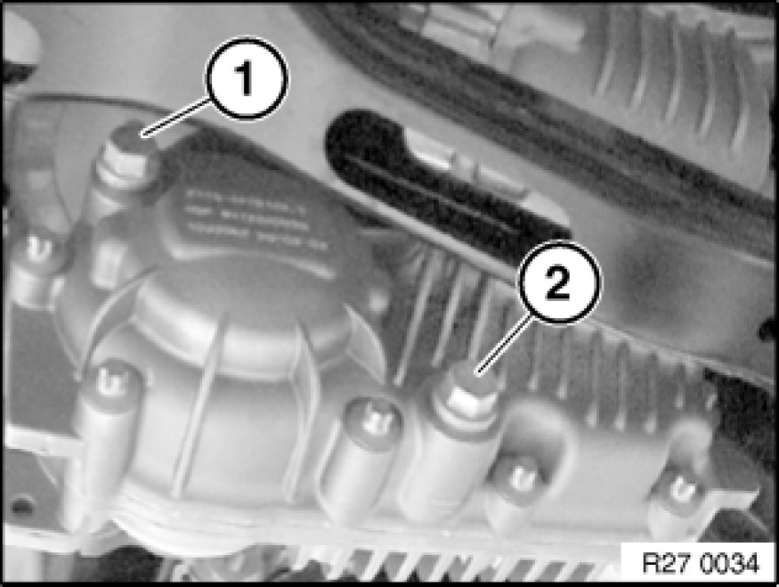

Installing Replacement Transfer Case (ATC 400 X-Drive)
27 10 020 - Installing replacement transfer case (ATC 400 X-Drive)

Important!
After replacement, the "Repair" service function must be carried out with GT1.

Recycling:
Catch and dispose of escaping transmission oil. Observe country-specific waste-disposal regulations.

Important!
After completing work, check gear oil level and top up if necessary.
Filler plug (1):
Tightening torque 27 2 7AZ [1][2]Mechanical Specifications.
Gear oil level to lower edge of filler plug (1).
Use only the approved transmission oil.
Failure to comply with this requirement will result in serious damage to the transfer case!

Necessary preliminary tasks:
- Drain gear oil Changing Oil In Transfer Box (ATC 400/500) at oil drain plug.
Tightening torque 27 2 11AZ [1][2]Mechanical Specifications.
- Remove transfer case Removing And Installing Transfer Case (ATC 400 X-Drive).

Convert following parts from previous transfer case to new transfer case.
- Covers and protective caps.
- Drive shaft transportation lock.
- Vent hose of transfer case.
- Vibration damper (M47T2).
Tightening torque 27 2 12AZ [1][2]Mechanical Specifications.
- Rubber mount for transfer case mounting, replace if necessary.